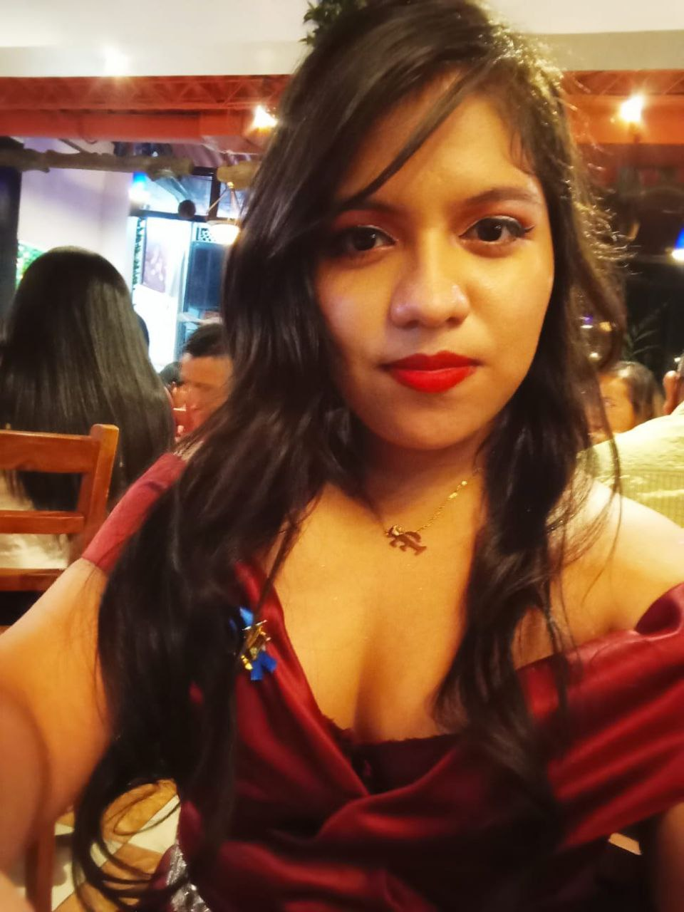

Hola, soy Alyson Alvarado, una apasionada de la programación con experiencia en el desarrollo de software. Desde que comencé a programar, he estado fascinada por la capacidad de crear soluciones innovadoras a través del código. Mi enfoque principal es desarrollo web, desarrollo móvil, inteligencia artificial, base de datos, me encanta aprender nuevas tecnologías y enfrentar desafíos técnicos,
Me especializo en diferentes lenguajes de programacion como: C#, c++, php, JavaScript, json, C, Java, Python, SQL, Visual Basic, .NET, Bash, Bootstrap, Vue.js , lenguaje de hipertexto HTML, HTML5, SGBD MySQL, PostgreSQL, MS SQL Server, he trabajado en proyectos gestionando la base de datos de "HARLEY-DAVIDSON", "MARINE MILLER", "MARINE MOMENTUN FOLEY","MARINE MOMENTUN LEGRANGE","MARINE LAKE MARTIN", "KARDEX Asamblea Legislativa" Actualmente CREANDO una ERP y una Aplicación de Facturacion Electronica. Además de mi habilidad técnica, también valoro la colaboración y la comunicación efectiva dentro de equipos de desarrollo.
Estoy constantemente buscando oportunidades para crecer profesionalmente y contribuir al mundo de la tecnología. Fuera del trabajo, disfruto Leer, Jugar VideoJuegos, Oir música, Ver vídeos. Si estás interesado en colaborar en un proyecto emocionante o simplemente quieres charlar sobre código, ¡no dudes en contactarme!
Bachillerato Técnico Vocacional en Infraestructura Tecnólogica y Sistemas Informaticos
(Complejo Educativo Residencial Altavista en el año 2023)
Estudiante de la UNIVERSIDAD DE EL SALVADOR (UES)
Ingenieria en desarrollo de software
correo: developer.0311@gmail.com.